Contenido
[ocultar]Introducción
Para descargar software en la tarjeta Skycube 1.0, así como controlar robots modulares desde el PC, se utiliza el cable TTL-232R-5V de FTDI. Este cable se conecta por un lado al USB del PC y por el otro a la tarjeta Skycube, mediante un conector de 3 pines. Originalmente, el cable viene con un conector de 6 pines, por lo que es necesario cambiarlo por el de tres. Este proceso es reversible, pudiéndose reponer el conector original en cualquier momento.
| 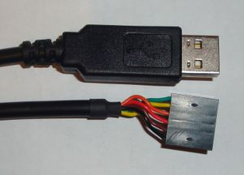 Extremos del cable FTDI original. Conector de 6 pines |
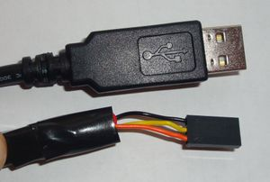 Extremos del cable FTDI modificado para descargar programas en la Skycube 1.0. Conector de 3 pines |


Modificando el cable
Paso 1: Quitar el conector de 6 pines
Hay que extraer los 6 hilos uno por uno. Usando un destornillador de cabeza plana, levantar la lenguaje y tirar del hilo para sacarlo.
| 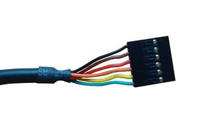 1) Conector original de cable, de 6 pines |
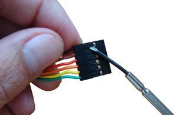 2) Levantar la lengueta para extraer cada hilo |
| 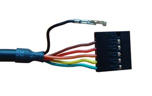 3) El hilo negro extraido del conector |
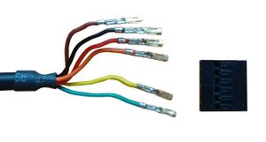 4) Todos los hilos extraidos |


Paso 2: Colocar el nuevo conector de 3 pines
Insertar los cables negro, amarillo y naranja en el nuevo conector. Es muy importante conectarlos exactamente igual que en las imágednes. Asegurarse que el conector está en posición correcta, con las pestañas y aberturas mirando hacia arriba (igual que en las fotos).
| 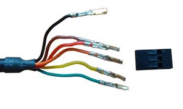 1) Cable con los hilos extraidos junto al nuevo conector de 3 pines a colocar |
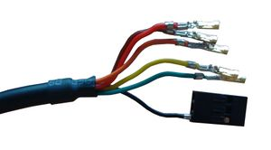 2) Hilo negro colocado |
| 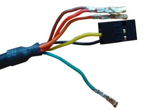 3) Hilo amarillo colocado |
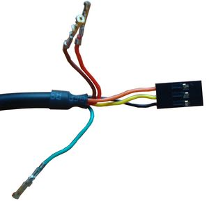 4) Hilo naranja colocado. Conector finalizado |


Paso 3: Proteger y apartar los hilos sobrantes
Poner cinta aislante alrededor de las cabezas metálicas de los hilos sobrantes para que no haya cortocircuitos. Luego doblarlos hacia atrás para dejarlos paralelos al cable. Poner cinta aislante alrededor para fijarlos. ¡¡El cable ya está listo para su uso!!.
| 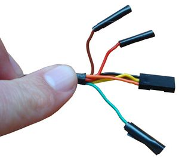 1) Poner cinta aislante en los hilos 3 hilos sobrantes |
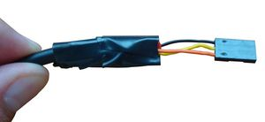 2) Cable listo para ser usado con la Skycube 1.0 |


Paso 4: Poner una etiqueta
Por último es iportante etiquetar el conector del cable para conectarlo a la Skycube con la orientación correcta, y así no equivocarnos
| 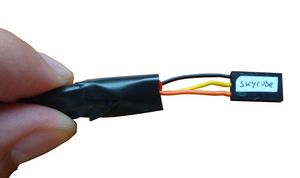 1) El cable con una etiqueta para conectarlo con la polaridad correcta |

Conexión a la tarjeta Skycube
El conector hembra de 3 pines del cable se conecta al conector M6 de la Skycube 1.0, en la misma posición indicada en las fotografías. Para evitar colocar el conector al revés, conviene poner una etiqueta, como se muestra en la foto de la derecha.
Para hacer las descargas, la Skycube tiene que estar encendida (led rojo encendido)
 Conexión del cable FTDI modificado a la Skycube 1.0 |
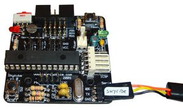 Conexión del cable FTDI modificado y etiquetado a la Skycube 1.0 |

Fotos
| Álbum de fotos |
Enlaces
- Cable FTDI TTL-232R-5V. Página del fabricante
- Cable en RS
- Hoja técnica del cable (PDF)
Noticias
- 22/Dic/2009: Primera versión de la documentación terminada
- 21/Dic/2009: Comenzada esta página